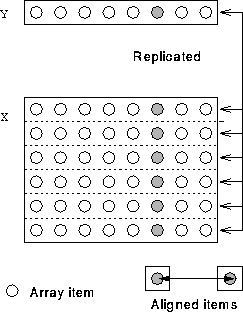

Can align elements with one or more dimensions.
!HPF$ ALIGN Y(:) WITH X(*,:)
The * on the RHS of the WITH keyword means that a copy of Y is aligned with every row of X.

i, Y(i) is local to X(:,i).
For more information, click here